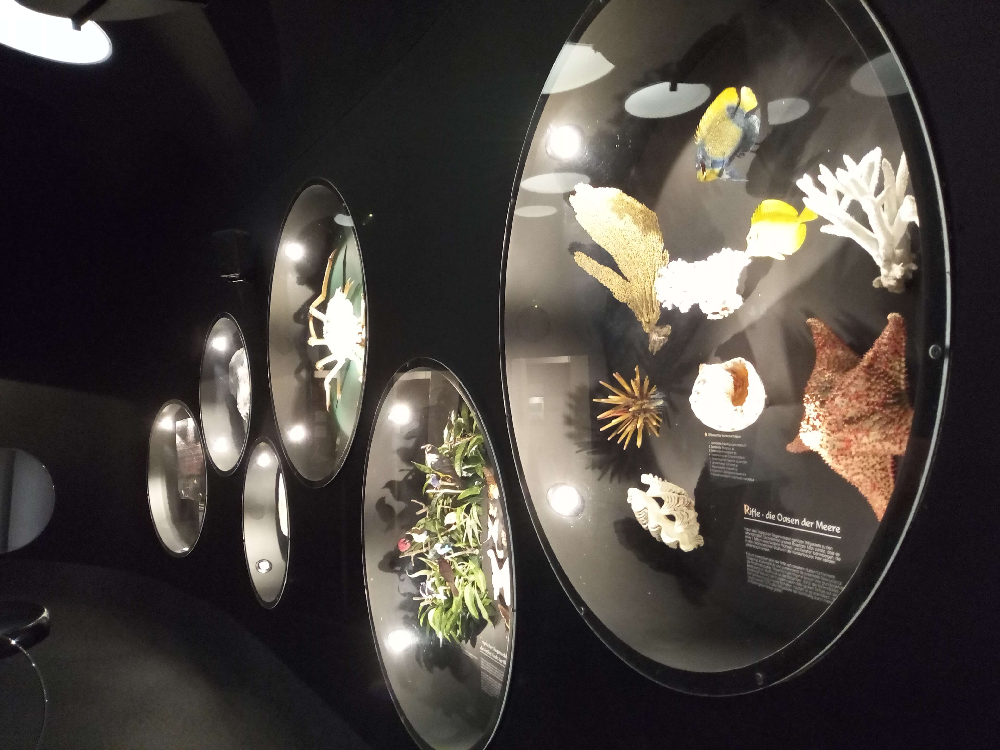

Bamberg, Germany
Germany · Bavaria
Bamberg is one of Bavaria's most distinctive historic towns, where centuries of history are reflected in its medieval streets, remarkable architecture, and picturesque riverside setting. Recognized as a UNESCO World Heritage Site, its Old Town offers an exceptional collection of beautifully preserved buildings and historic landmarks. The famous Old Town Hall, dramatically situated above the Regnitz River, is among the town's most striking sights, while its narrow streets, traditional houses, and welcoming atmosphere invite visitors to explore at a slower pace. Beyond its architectural beauty, Bamberg reveals a strong sense of local identity and cultural heritage. These photographs capture my personal impressions and memories of discovering this charming Bavarian town.

Natural History Museum
Explore my personal photographs of Bamberg's Natural History Museum.
Explore Photos ↗